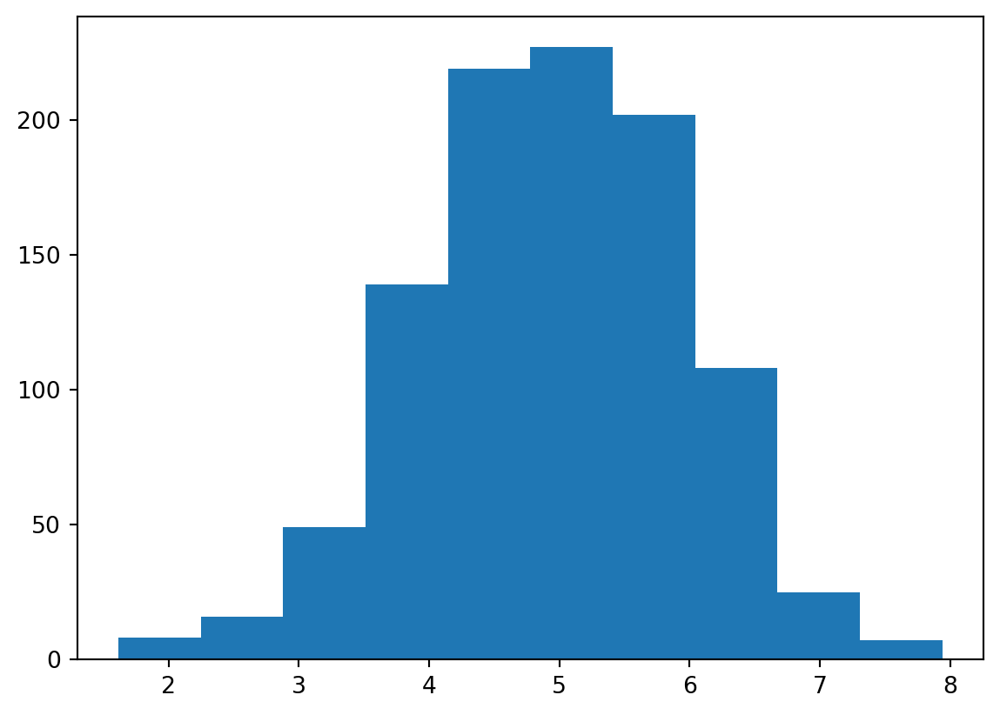
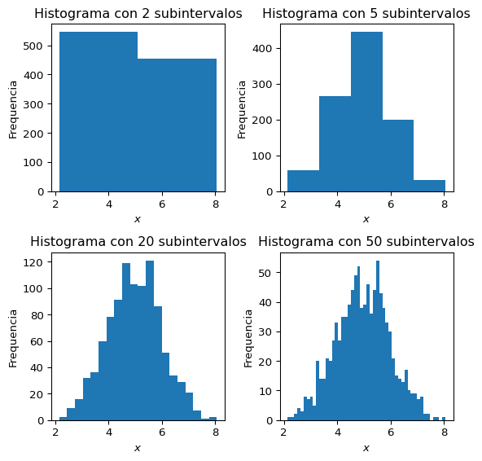
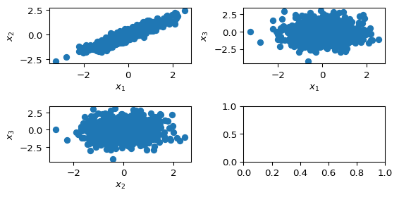
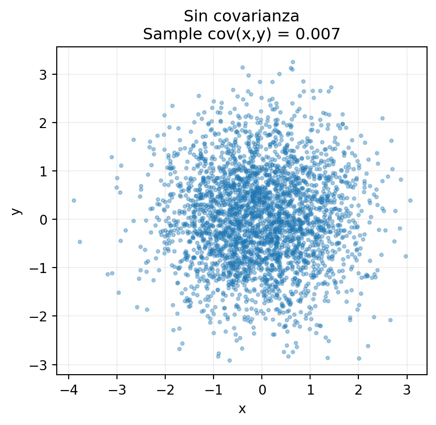
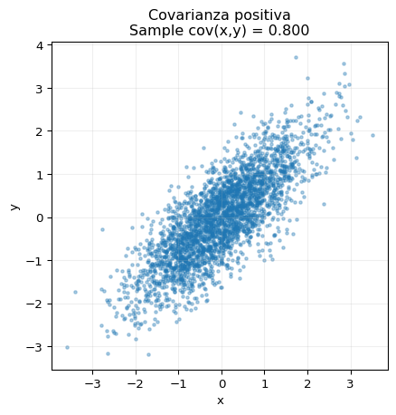
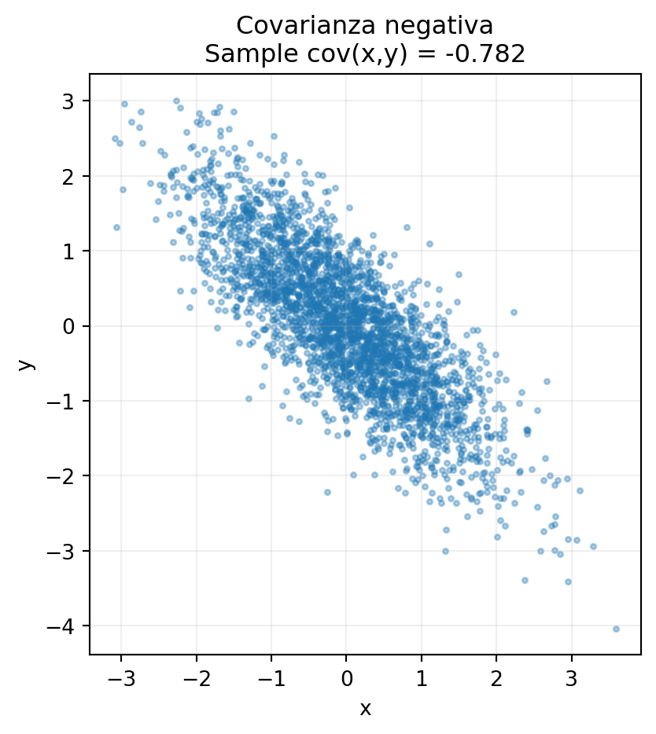
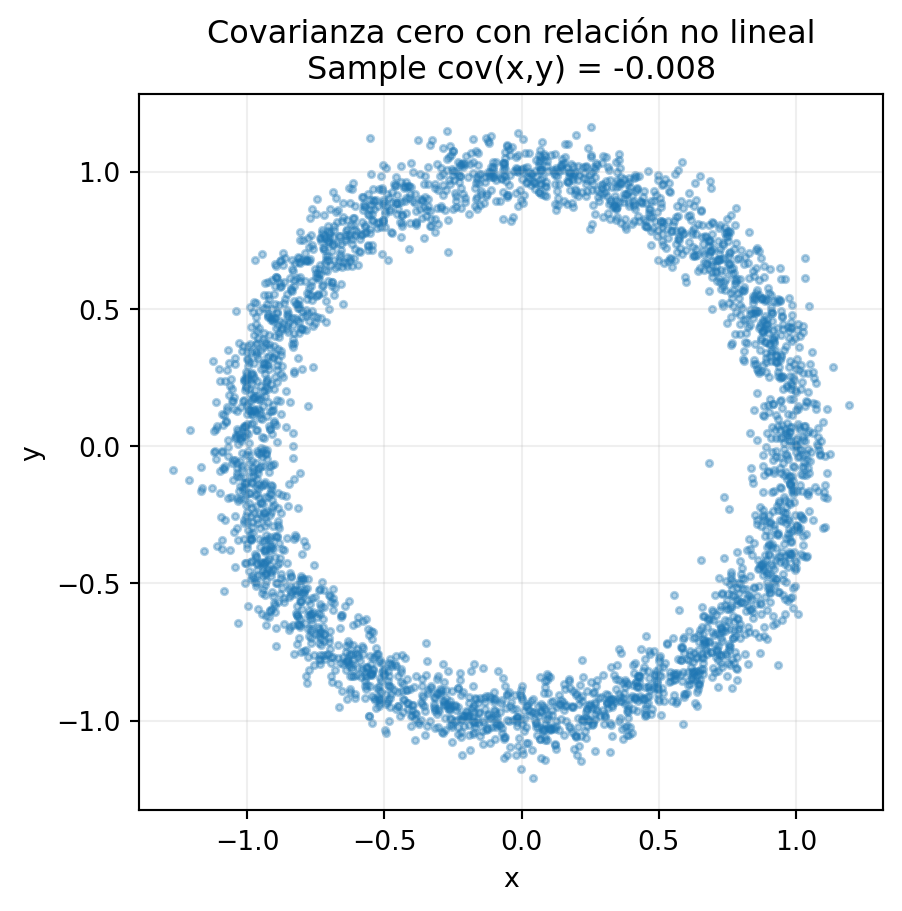

import numpy as np
import matplotlib.pyplot as plt
mediciones = np.random.normal(loc=5, scale=1, size=1000)
plt.hist(mediciones)
plt.show()
Para nosotros en este curso, un dato será una medición de algún sistema. Los datos pueden ser números reales, en cuyo caso los reportamos con una barra de error. Por ejemplo \[ 9.1300 \pm 0.0001\,. \] Note que reportamos el resultado con un número de cifras decimales compatibles con el error.
¿Pero qué es el error? En realidad al número reportado arriba también le falta información. Necesitamos especificar la confianza a la cual corresponde ese error. Por ejemplo podemos decir que tiene una confianza del \(95\%\). Eso quiere decir que hay una probabilidad del \(95\%\) asociada con ese error. El sentido de esto lo haremos más preciso cuando hablemos de probabilidad.
También son importantes los datos que se representan como números enteros o categorías. Por ejemplo, cada pixel de una imagen son tres números enteros que representan los colores rojo, verde y azul.
Para su descripción, decimos que los posibles resultados residen en un conjunto \(S\). Un subconjunto de \(S\) lo llamamos un evento.
Cuando la medición nos da un solo número real, una manera útil de graficarla es mediante un histograma. Es decir, dividimos el intervalo de valores de la variable en un cierto número de subintervalos. El histograma nos dice cuántas veces obtuvimos una medición en el intervalo
import numpy as np
import matplotlib.pyplot as plt
mediciones = np.random.normal(loc=5, scale=1, size=1000)
plt.hist(mediciones)
plt.show()
En este gráfico cada barra es el número de datos que cae en el subintervalo. El gráfico nos da una idea de cómo se distribuyen los datos.
Veamos qué pasa si variamos la cantidad de subintervalos
# Número de subintervalos para el histograma
bin_counts = [2, 5, 20, 50]
# Crear subfiguras
fig, axes = plt.subplots(2, 2, figsize=(6, 6))
# Graficar cada histograma
for ax, bins in zip(axes.flatten(), bin_counts):
ax.hist(mediciones, bins=bins)
ax.set_title(f'Histograma con {bins} subintervalos')
ax.set_xlabel('$x$')
ax.set_ylabel('Frequencia')
plt.tight_layout()
plt.show()
Si aumentamos la cantidad de subintervalos usados, el gráfico se hace ruidoso, varía mucho el valor de cada intervalo. Si tenemos pocos subintervalos, es difícil intuir la distribución.
En varias dimensiones, es común describir los datos mediante gráficos de dispersión (scatterplots). Estos nos pueden decir dónde se concentran los resultados y si hay correlación entre variables.
import numpy as np
import matplotlib.pyplot as plt
# Gaussiana 2d con correlacion
x1_pure = np.random.normal(loc=0, scale=1, size=1000)
x2_pure = np.random.normal(loc=0, scale=1, size=1000)
x3 = np.random.normal(loc=0, scale=1, size=1000)
x1 = 0.3 * x1_pure + 0.7 * x2_pure
x2 = 0.5 * x1_pure + 0.5 * x2_pure
fig, axes = plt.subplots(2, 2, figsize=(6, 3))
axes[0,0].scatter(x1, x2)
axes[0,0].set_xlabel('$x_1$')
axes[0,0].set_ylabel('$x_2$')
axes[0,1].scatter(x1, x3)
axes[0,1].set_xlabel('$x_1$')
axes[0,1].set_ylabel('$x_3$')
axes[1,0].scatter(x2, x3)
axes[1,0].set_xlabel('$x_2$')
axes[1,0].set_ylabel('$x_3$')
plt.tight_layout()
plt.show()
Si queremos tener una idea del valor típico de los datos, podemos tomar el promedio o media aritmética que denotamos con una barra sobre la cantidad
\[ \bar{x} = \frac{1}{N}\sum_{i=1}^N x_i\,, \]
donde \(N\) es el número de puntos de datos.
Si en cambio queremos saber cuánto están dispersos respecto a este valor, calculamos la varianza
\[ s^2 = \frac{1}{N}\sum_{i=1}^N (x_i - \bar{x})^2\,. \]
la desviación estándar \(s\) es la raíz cuadrada de la varianza, y como lo dice su nombre nos dice cuánto se desvía típicamente un dato.
Cuando hablamos de varianza y covarianza nos podemos referir a diferentes cantidades:
La varianza de los datos \(s^2\) está dada por la fórmula anterior y nos dice cuál es la dispersión de estos.
La varianza de una distribución de probabilidad \(\sigma^2\) nos dice lo ancha que es es esta. Si esta describe los datos, será igual a \(s^2\) para \(N \to \infty\).
La varianza estimada \(\hat{\sigma}^2\) es nuestra mejor estimación de \(\sigma^2\) para un conjunto de datos. Lo discutiremos dentro de unas clases.
Una diferencia similar ocurre para la covarianza.
A veces cada dato contiene más de una variable. Por ejemplo cuando medimos temperatura y presión de un sistema termodinámico. Una manera de medir la relación entre las variables es mediante su covarianza
\[ \text{cov}\,(x,y) = \frac{1}{N}\sum_{i=1}^N(x_i - \bar{x})(y_i - \bar{y})\,. \]
Ilustremos esto mediante una figura
import numpy as np
import matplotlib.pyplot as plt
rng = np.random.default_rng(0)
N = 3000
def scatter_with_cov(x, y, title):
cov = np.cov(x, y, ddof=1)[0, 1]
fig, ax = plt.subplots(figsize=(5, 5))
ax.scatter(x, y, s=6, alpha=0.35)
ax.set_title(f"{title}\nSample cov(x,y) = {cov:.3f}")
ax.set_xlabel("x")
ax.set_ylabel("y")
ax.set_aspect("equal", adjustable="box")
ax.grid(True, alpha=0.2)
plt.show()
# 1) Zero covariance (independent Gaussian)
x1 = rng.normal(size=N)
y1 = rng.normal(size=N)
scatter_with_cov(x1, y1, "Sin covarianza")
# 2) Positive covariance (correlated Gaussian)
mean = [0, 0]
Sigma_pos = np.array([[1.0, 0.8],
[0.8, 1.0]])
xy2 = rng.multivariate_normal(mean, Sigma_pos, size=N)
scatter_with_cov(xy2[:, 0], xy2[:, 1], "Covarianza positiva")
# 3) Negative covariance (anti-correlated Gaussian)
Sigma_neg = np.array([[1.0, -0.8],
[-0.8, 1.0]])
xy3 = rng.multivariate_normal(mean, Sigma_neg, size=N)
scatter_with_cov(xy3[:, 0], xy3[:, 1], "Covarianza negativa")
# 4) ~Zero covariance despite strong non-linear relation (noisy ring)
t = rng.uniform(0, 2*np.pi, size=N)
r = 1.0 + 0.07 * rng.normal(size=N) # small radial noise
x4 = r * np.cos(t)
y4 = r * np.sin(t)
scatter_with_cov(x4, y4, "Covarianza cero con relación no lineal")



Como vemos, la covarianza captura solo relaciones lineales entre pares de variables.
Para discutir los datos es inevitable hablar de probabilidad.
Matemáticamente, la probabilidad es una función que le asigna un número entre cero y uno a cada subconjunto de un conjunto \(S\). A dicho subconjunto le llamamos un evento. Pedimos que la probabilidad del conjunto vacío \(P(\emptyset) = 0\) y que la probabilidad de \(S\) es \(P(S) = 1\). Además pedimos que la probabilidad de la unión de dos subconjuntos disjuntos \(P(A \cup B) = P(A) + P(B)\).
Hay varias imterpretaciones de la probabilidad. Las dos más populares son:
No discutiremos ulteriormente estos puntos por simple falta de espacio. Simplemente usaremos ambas interpretacione indiferentemente para obtener una intuición en cada caso.
La probabilidad asociada a la diferencia de dos conjuntos \(A - B\) es fácil de obtener. Primero notemos que \(A = (A - B) \cup (A \cap B)\), que son disjuntos. Por lo tanto
\[ P(A) = P(A - B) + P(A \cap B)\,. \]
De aquí
Teorema 1 \[ P(A - B) = P(A) - P(A \cap B)\,. \]
Cuando dos eventos \(A\) y \(B\) no son disjuntos, podemos separar su unión en dos conjuntos disjuntos
\[ A \cup B = (A - B) \cup B\,. \]
Esto nos permite obtener la siguiente propiedad
Teorema 2 \[ P(A \cup B) = P(A - B) + P(B) = P(A) + P(B) - P(A \cap B)\,. \]
Nos gustaría poder decir algo sobre \(P(A \cap B)\). En general no podemos decir nada porque las asignaciones de probabilidad son arbitrarias.
Definimos la probabilidad condicional de \(A\) dado \(B\) como
\[ P(A | B) = \frac{P(A \cap B)}{P(B)}\,. \]
Intuitivamente, esta probabilidad consiste en restringir el universo de posibles eventos a aquellos que ocurren junto con el evento \(B\). Es decir, nos dice cuánto es probable que \(A\) ocurra dado que \(B\) ocurrió. En general \(P(A | B) \neq P(B | A)\).
De la definición de la probabilidad condicional tenemos que \(P(A \cap B) = P(A | B) P(B)\). Decimos que dos eventos son independientes si \(P(A | B) = P(A)\) y \(P(B | A) = P(B)\). En ese caso podemos decir que \(P(A \cap B) = P(A) P(B)\).
Tal vez el teorema más sencillo entre los que han tenido mayor impacto. Este teorema nos permite relacionar \(P(A | B)\) con \(P(B | A)\). Para lograrlo notemos que podemos escribir \(P(A \cap B)\) de dos maneras iguales
\[ P(A \cap B) = P(A | B) P(B) = P(B | A) P(A)\,. \]
De donde
Teorema 3 (Teorema de Bayes) \[ P(A | B) = \frac{P(A \cap B)}{P(B)} = \frac{P(B | A) P(A)}{P(B)}\,. \]
2.1, 2.3, 2.5, 2.7